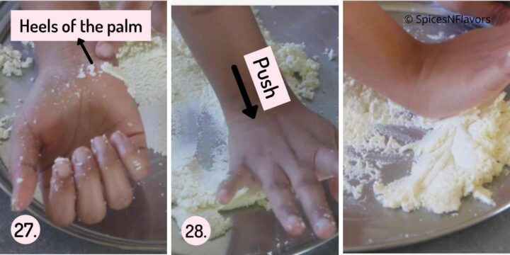

On med flame, in a wide mouth heavy bottom pan, cook the 1.5 litre milk until you see steam coming out or sufficiently heated. Keep stirring in between
a collage of steps for preparing the ras for rasmalai.
Once it starts steaming, take a couple of tbsp milk and add it to the saffron strands. Mix. Allow it to release its flavour. Let this stand until ready to use.
Keep stirring and cooking the milk until it has reduced to 70% of the original quantity that we started with. This would take around 30 to 40 mins depending upon the type of pan used, flame in which you are cooking etc.
Once the milk is reduced, add the saffron milk, nuts and sugar. Mix well and again cook it for further 10 mins, do stir in between so that the milk does not stick to the bottom of the pan and burn.
Finally add the yellow food colouring if using. Mix and bring it to a boil Switch off the flame and transfer it to another bowl.
Grind the cardamom pods with a pinch of sugar to fine powder. Discard the skin of the cardamom pods and add the rest to the prepared ras. Let it cool until ready to use.
Paneer Balls :
Bring the 1.5 litre milk to rolling boil on med flame.
Once boiled switch off the gas and allow it cool a bit say around 5 mins on your kitchen counter top.
Meanwhile combine the vinegar and water in a separate bowl and set aside. Place a bowl with a strainer on top. Line it with muslin cloth or cheesecloth and keep this ready too.
After about 5 mins, start adding the diluted vinegar little by little stirring continuously. You will observe that the paneer and whey would start separating. Keep on adding and mixing until all the paneer is separated; the clear indication of this is when the milk turns green in colour.
At this stage either add ice-cold water to stop the cooking process or simply strain immediately (that's what I do). And that is why it is advisable to keep everything ready before starting with curdling of the milk.
The paneer would get collected in the muslin cloth. (Collect the whey and use it to make chapati dough, dal, kadi etc). Gather the ends of the cloth and squeeze it to release all the excess water. Tie a knot and hang it somewhere to allow the excess water to drip off completely say another 20-25 mins.
After 25 mins, you will see that the paneer is crumbly yet feels a little moist when pressed between your fingers. (You would hear that chip chip sound when pressed) take it out onto a blender and using the pulse functionality pulse it (just 4 times) to form a paste smooth dough in two batches.
Take it out on to the plate and knead for another 4 to 5 mins by gently pushing it using the heels of your hands.

Then divide the dough into 19 equal sized balls. Give it a round shape and then flatten it out by gently pressing in between your palms. Ensure that there are no cracks. IF you see any simply press it again to make it crack-free. Prepare all the balls. Cover and keep until the sugar syrup is ready
Sugar Syrup
In a wide mouth and deep pan, bring the sugar and water to rolling boil.
Add the prepared flattened balls one by one (leaving sufficient time interval between each addition), cover with the lid and allow it to cook for 10 mins on medium high flame. After 10 mins with gentle hands stir the balls once. Then reduce the flame to medium and cook for another 10 mins. You would see it swelling and dancing in the syrup.
Switch off the gas, and let it cool completely in the sugar syrup itself for another 15 mins.
After that squeeze out the excess sugar syrup by gently pressing the paneer ball and then transfer to the cooled ras - sweetened milk. Let it sit for 3-4 hours until the balls absorb the milk preferably in the refrigerator.